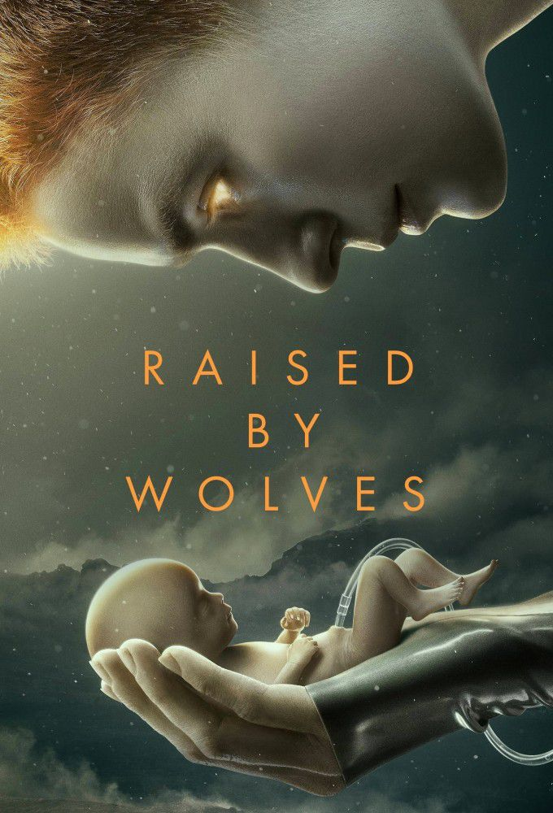

Raised by Wolves
Aux alentours de l’an 2200, un conflit opposant l’Église des Mithraic aux rebelles athées a rendu la Terre inhabitable. Confinés à bord de grandes arches spatiales, les survivants de l’humanité se dirigent vers l’exoplanète Kepler 22B (réellement découverte par la Nasa en 2011) dans l’espoir d’y fonder des colonies pour sauvegarder l’espèce. Affrétée par les non-croyants, la première navette à en fouler le sol est pilotée par deux androïdes, Mère et Père, chargés de donner naissance à des embryons humains et de les élever loin de toute religion.
Lire l'article
